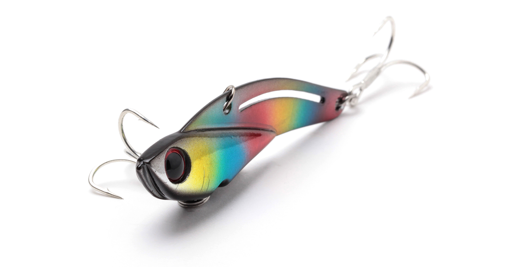
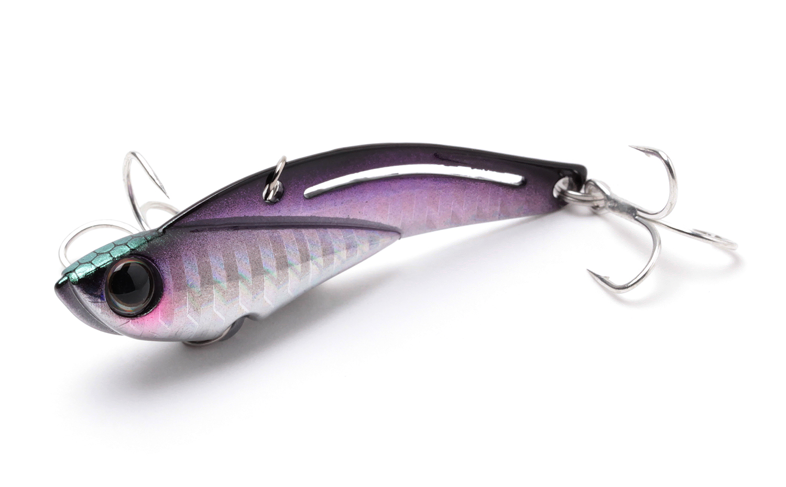
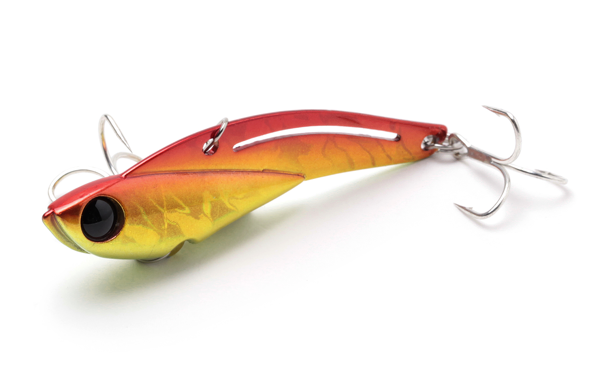
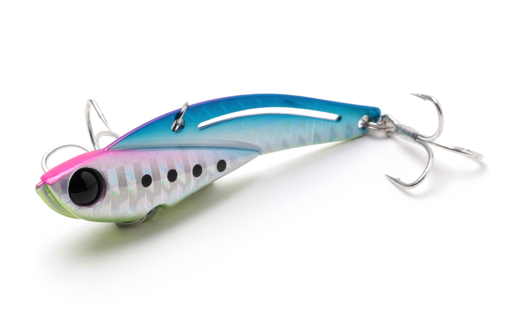
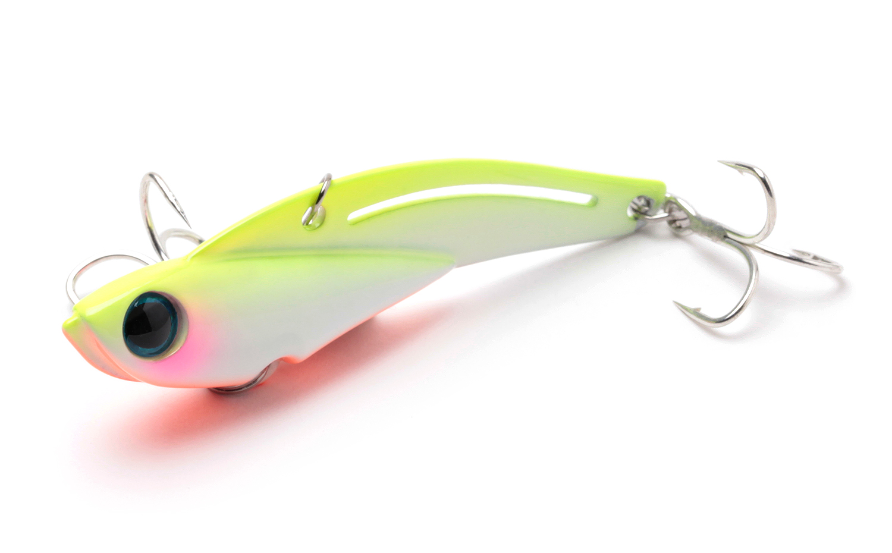

鉄PANバイブ
（Teppan Vib）
鉄PANバイブ（Teppan Vib）はJackson（ジャクソン）のメタルバイブレーションです。
「ストレスフリーでガンガン使える特攻系メタルバイブ」として、遠投性・レスポンス・強波動というメタルバイブに求められる要素を高次元で融合。バランサースリットでスイム姿勢とフォール姿勢を安定させ、大きめのフックを使いながらもライン絡みなどのトラブルを抑えています。

画像出典:ジャクソン公式HP
スペック
- メーカー
- Jackson（ジャクソン）
- タイプ
- メタルバイブレーション
- ウェイト
- 9g／14g／20g／26g
- 全長
- 48mm／55mm／63mm／72mm
- フック
- #12（9g・14g）／#10（20g）／#8（26g）
- ターゲット
- シーバス・チヌ・青物など
- 価格
- 1,045〜1,155円（税込）
▼今すぐチェック


鉄PANバイブの特徴
トラブルを気にせず“攻め続けられる”、メタルバイブの基本性能を突き詰めた1本
-
遠投性・レスポンス・強波動を高次元で融合
メタルバイブに求められる飛距離、巻き始めからすぐ振動するレスポンス、魚を寄せる強い波動を高いレベルで両立。広いエリアを効率よく探れる。
-
バランサースリットで自然なスイム姿勢
ボディのバランサースリットがスイム姿勢を自然なものにし、ただ巻きでも安定したバイブレーションを出せる。
-
フォール姿勢も安定してトラブルレス
ライン絡みなどのトラブルが出やすいフォール時の姿勢も安定させ、大きめのフックを使いながらもトラブルを抑えた。リフト＆フォールを多用しても、ストレスなく使い続けられる。
鉄PANバイブの使い方
基本はただ巻きとリフト＆フォール。着水後にカウントダウンでレンジを決めてからただ巻きし、レスポンスの良い振動で広く探ります。
ボトム付近を狙うときは、ロッドをあおって持ち上げ、フォールさせるリフト＆フォールが有効。フォール姿勢が安定しているので、ラインが絡みにくく、テンポ良く繰り返せます。
鉄PANバイブの得意な状況
河川・港湾・サーフなど、広いエリアを手早く探りたい状況が出番。
デイゲームのシーバスや河川のチヌゲーム、青物など、波動と飛距離で魚を探す場面で強い1本です。重さを選べるので、水深や流れの強さに合わせて使い分けられます。
ワンポイント
着水からボトムまでのカウントを数えておくと、毎投同じレンジを通しやすくなります。根掛かりが多い場所では、ボトムに着いたらすぐにリフトしてボトムを“叩く”イメージで使うのがコツです。
重めのウェイトは飛距離とレンジ、軽めのウェイトはシャローや食わせ重視と考えると選びやすくなります。
鉄PANバイブのウェイトの使い分け
| モデル | 全長／自重 | 得意な場面 |
|---|---|---|
| 9g | 48mm／9g | シャローや港湾の小場所。小型ベイトパターンや食わせ重視に |
| 14g | 55mm／14g | 河川・港湾のオールラウンド。迷ったらまずこれ |
| 20g | 63mm／20g | 飛距離と深いレンジを狙いたい場面に |
| 26g | 72mm／26g | サーフや流れの強い場所。最も遠投・深場向け |
鉄PANバイブは同じコンセプトで4つの重さから選べるので、水深・流れ・飛距離に合わせて使い分けられます。より小さい3g・5g・7gのモデルもラインナップされています。
人気カラー
鉄PANバイブは豊富なカラーを展開（一部カラーは14g以上の規格のみ）。オススメのカラーを厳選して紹介します。

カタクチカタクチイワシを意識したナチュラルなベイトカラー。

アカキン赤と金の定番アピールカラー。濁りやローライトに。

マジックブルピンブルーとピンクの高アピールカラー。日中の青物やシーバスに。

グローチャートグロー入りのチャート。マズメやナイトの視認性重視に。
画像出典:ジャクソン公式HP
鉄PANバイブに似ているルアー
-
 ラナケラ57-13S
TREFLE CREATION
詳細はこちら＞
ラナケラ57-13S
TREFLE CREATION
詳細はこちら＞
全長57mm・自重13gのシンキングルアー。鉄PANバイブ14gと近いサイズ感で、シーバスを狙う小粒ルアーとして選択肢が重なる。
-
 ビッグバッカー107
ジャッカル
詳細はこちら＞
ビッグバッカー107
ジャッカル
詳細はこちら＞
全長107mm・自重27gのメタルバイブレーション。より大きなシルエットと重さで、サーフなど遠投が必要な場面での持ち替えに。
-
 アイアンマービー109
ブルーブルー
詳細はこちら＞
アイアンマービー109
ブルーブルー
詳細はこちら＞
全長109mm・自重37gの鉄板バイブレーション。さらに重く大きいモデルで、深場や強い流れを攻めたいときに。